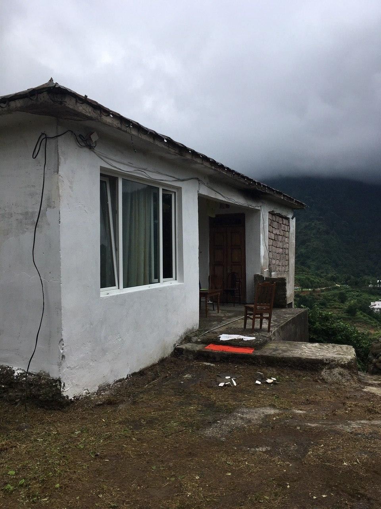
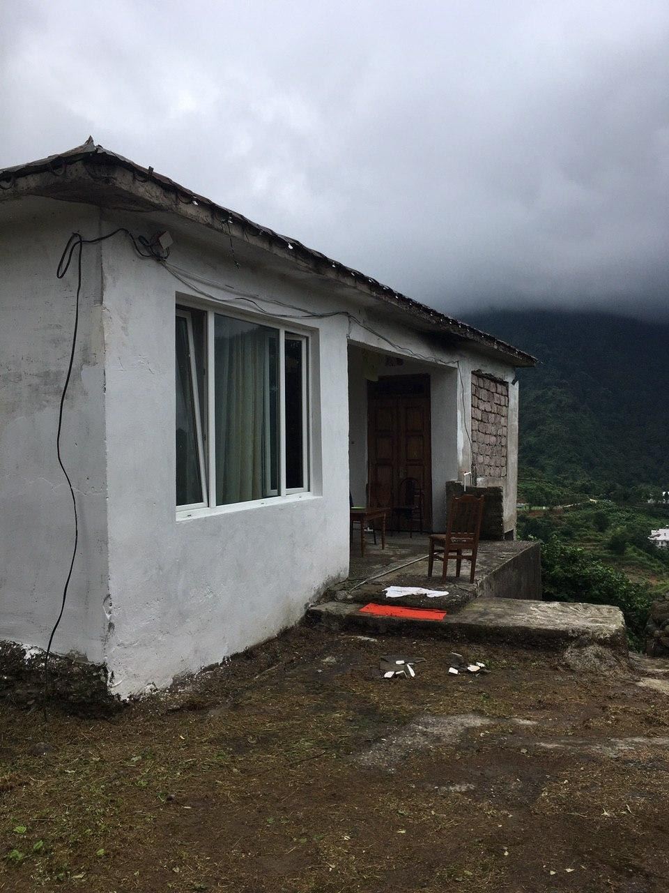

Korolistavi is a small village in the mountains of south Georgia. This mountain is also called Crying mountain cos of tropical microclimate with huge rains for two summer months, people call them rotten months. The area is full of different sounds and its good as it is so i found it hard to play music there. So I put off the pipe in the roof to have a rows with water falling on different cants to record it as a drums. I also was influenced by drummer Marshal Trammel , so I was trying to find a way to play drum structures like him.
 
